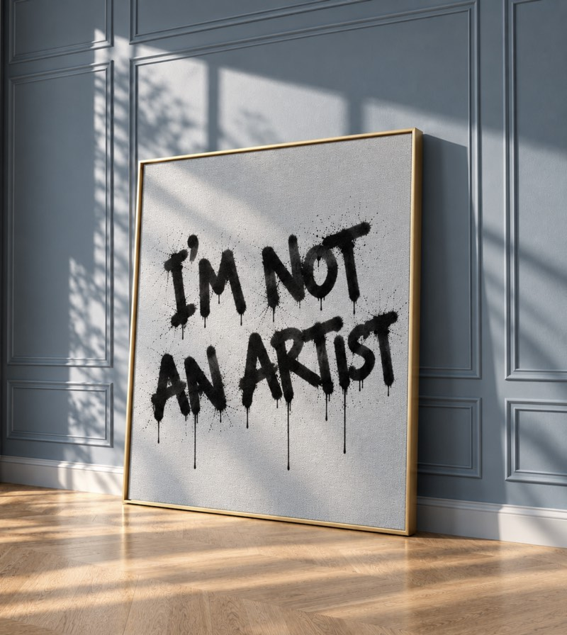
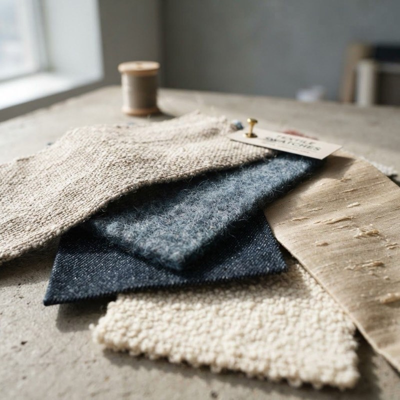
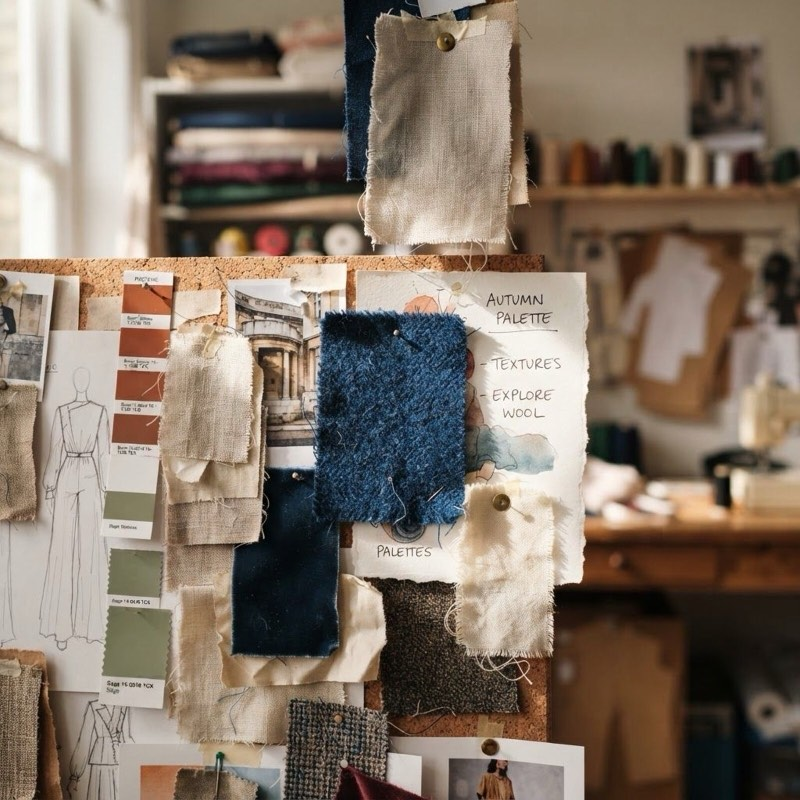
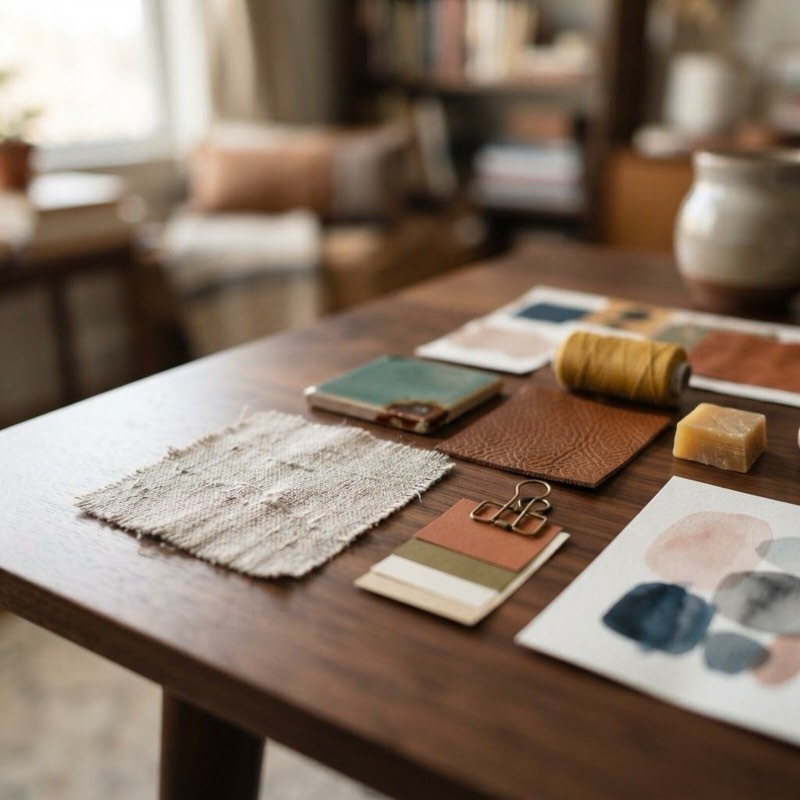

01Ascoltare
Mi interessa capire come una casa viene vissuta e come un'attività vuole essere riconosciuta: è da lì che comincio, non da uno stile da applicare a ogni progetto.
Anteprima. Bozza del nuovo sito di Melania Di Blasi, non ancora pubblicata. Il sito in linea oggi è mdbprogettista.it.
Progetto spazi residenziali e commerciali. Mi interessa capire come una casa viene vissuta e come un'attività vuole essere riconosciuta: è da lì che comincio, non da uno stile da applicare a ogni progetto.

«Chiunque può giudicare ciò che vede. Un designer immagina come può migliorarlo.»
L'obiettivo del mio lavoro è trasformare ambienti e identità in racconti coerenti e funzionali: dal progetto, durante la trasformazione, fino alla realizzazione.
Mi interessa capire come una casa viene vissuta e come un'attività vuole essere riconosciuta: è da lì che comincio, non da uno stile da applicare a ogni progetto.
Ascolto, osservo e traduco esigenze e idee in scelte concrete: la distribuzione degli ambienti, i materiali, la luce, i dettagli.
Cerco soluzioni che funzionino nella vita di tutti i giorni e che abbiano un'identità propria, coerente con le persone e con il luogo.
Il mio lavoro non finisce con la consegna del progetto. Accompagno il cliente durante la ristrutturazione, mi confronto con le imprese e seguo le scelte che emergono lungo il percorso, perché ciò che abbiamo immaginato insieme trovi forma nella realtà.
Materiali, colori e campioni prima; le stanze dopo.




Testo, grafica e disegno di copertina sono miei. Dentro c'è il mio modo di lavorare: prima la carta, poi la polvere, alla fine la bellezza.
Scopri il libroO vuoi semplicemente ricevere maggiori informazioni? Raccontamelo brevemente: il primo colloquio è sempre gratuito.
Mi trovi anche qui